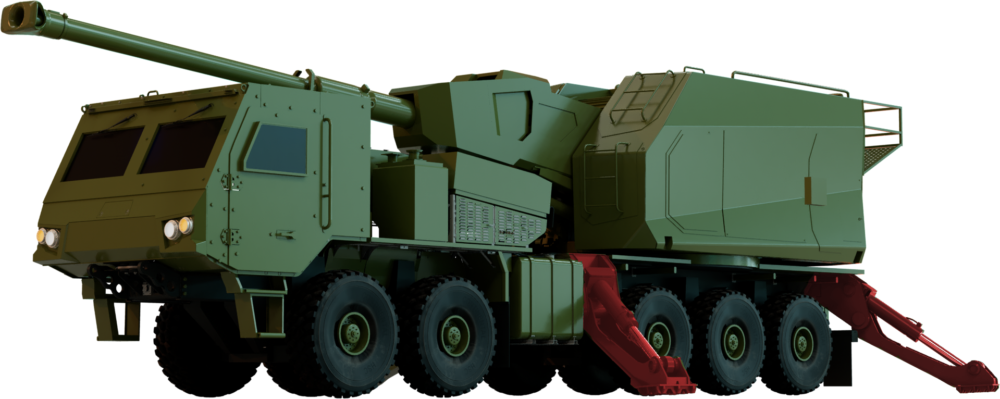
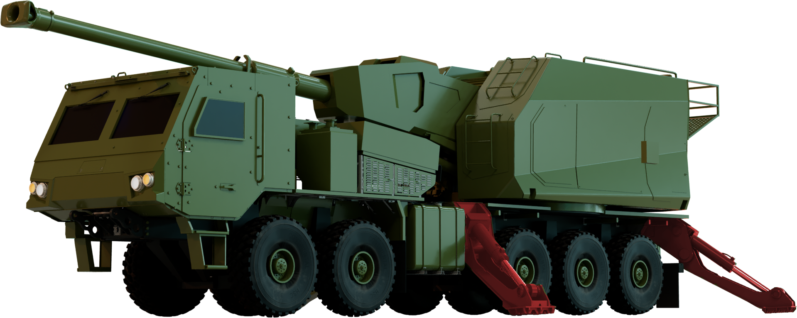
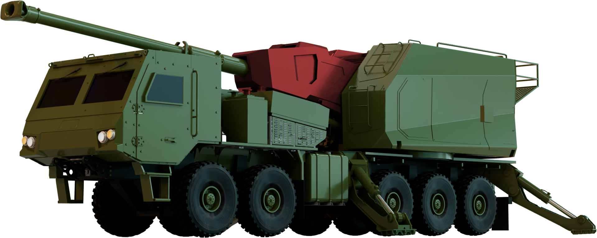
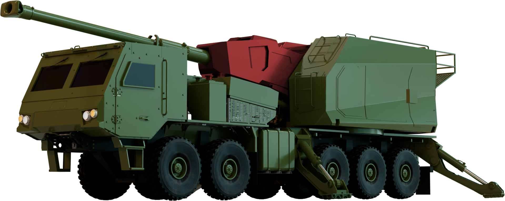
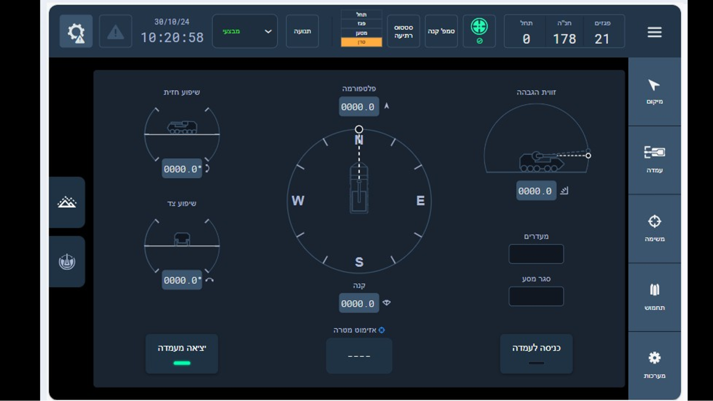
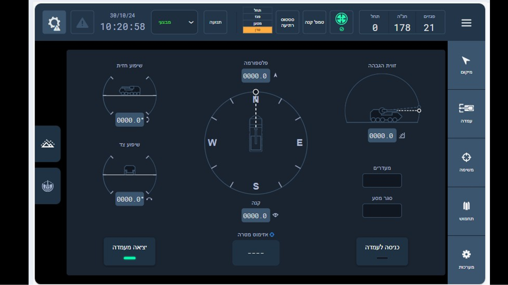

Welcome to our 3D Model
General Description

 

 


Sigma Operational Control Systems
The Elbit SIGMA 155mm Self Propelled Howitzer system employs a wide range of Operational and Control Systems to support the crew. Among them are: Fire Control System (FCS) - Located at the gunner's position in the cab and at the ammunition stations. The FCS performs the following operations: Operation of the system and execution of fire missions. Communication and data transfer with the fire control system. Elbit SIGMA 155mm Self Propelled Howitzer General Overview, Maintenance Safety and Deployment Instructions Monitoring and execution of the system's armament. The CF 33 is a ruggedized Toughbook with 12.0" LCD display and touch screen. The CF 33 is used to operate and control the FCS. The power is supplied from an external DC power source or from internal rechargeable\ disposable batteries. The CF 33 is the primary Gunner user interface through which the fire mission is initiated and managed.
The C4i is located at the commander's position. It interfaces with the FCS to transfer fire missions and commands. Additionally, the commander monitors and manages the navigation routes and is in communication with the other forces in the field. Elbit SIGMA 155mm Self Propelled Howitzer General Overview, Maintenance Safety and Deployment Instructions
The Commander operates the C4i system and is responsible for planning the mission for each SIGMA gun per the designated fire mission
Elbit SIGMA 155mm Self Propelled Howitzer General Overview, Maintenance Safety and Deployment Instructions Enter the Fire Mission provided by the C4I into the FCS. Once all the information is entered and verified by the commander the gunner may execute the firing procedure per the commander’s instructions.
 


Cab System and Fire Functions
The SIGMA Gun Platform Crew operates the gun entirely from the Cab, from Driving to performing a fire mission to departure (“Shoot and Scoot”). There systems are operated by a total of 3 functions The Commander commands the SIGMA Gun Platform Gun Platform crew, oversees the operational processes in the system in operational mode, responsible for the operation of the C4i system. The Gunner is responsible for operating the gun’s systems via the FCS application, executes the fire missions and operates the various systems per the commander’s instructions. The Driver / Operational Platform Operator is responsible for Driving and Operating the various driver assist systems of the SIGMA Gun Platform Truck, including the CTIS (Central Tire Inflation System) and the ATI (Artillery Turret Interface, which includes the Stabilizers, Travel Lock and Turret Swivel).
Deployment & Fire Mission
Prior to deploying the SIGMA Gun Platform system consult and follow all safety guidelines as well as the specifics of the mission. Place the SIGMA truck on a level surface, which can support the weight of the truck, the pressure of the stabilizers and the recoil from the gun.
Engage the PTO and confirm that the hydraulic pressure is within the normal range.
Deploy all 4 stabilizers and confirm that they have extended, are securely footed and that the SIGMA Gun Platform platform is level.
Open the Travel Lock. Confirm that the barrel is free to move. Travel Lock
Introduction
The SIGMA Gun Platform (Autonomous Truck Mounted howitzer System) is a 155 mm Self-Propelled AWD 10x10 truck mounted long range Howitzer gun system. The system’s key attributes include quick, automated and sustainable firepower as well as mobility, operable in all terrain, rapid deployment (“Shoot and Scoot” functionality) and quick fire mission response time. The SIGMA Gun Platform System is integrated with fully computerized systems, including C4i, FCS, GNSS, ILS, all of which provide automatic control, accurate navigation and target acquisition. The Gun itself is fully automatic, from loading to firing to reloading. It supports quick fire capabilities, ranging from 4–9 projectiles per minute, with ranges up to 40 km for standard ammunition and up to 80 km with extended range and guided ammunition. Each SIGMA Gun Platform carries a total of 40 rounds.
Safety Instructions
Only trained crew members are allowed to operate the SIGMA system. At any given drill, crew members are to be positioned at their working posts. Activation of each function below should be declared loudly verbally by the crewmember performing each function:
- “Hydraulics On”
- “Traverse/ Elevation Movement”
- “Loading System Active”
- “Breech Close”
- Engine On
- Stabilizers Lowering/Lifting
- Barrel Laying
- Loader movement
- SAS movement
- ARM Switch On
Before performing any motion in the GUN System –Motion sectors must be free from obstacles- animals, persons, equipment. No-one is allowed to be in any motion sector of the barrel while GUN systems are active, and hydraulics are on.
combat drills, crew members at a minimum must wear:
Beware of heated surfaces during standard operation. Any maintenance or operation on the SIGMA is to be conducted with designated authorized tools only.
Follow the pre- firing/ daily/ weekly/ during firing/ post- firing maintenance and calibration procedures. Use only approved fluids for use in the system- lubricants, fuel, etc. Only qualified technicians should perform maintenance operations.
- When the system is in maintenance mode - safety mechanisms on system motion are degraded and forbidden motion sectors are disabled, any gun motion using manual controls or back-up should be executed slowly and with extreme caution. An additional spotter is required.
- Gun Hydraulic System Safety
- Prior to hydraulic system maintenance, open the Accumulator lever in order to reduce the oil pressure in the system.
- Verify that the safety switch is turned off when the hydraulic system is not used.
- Before any maintenance activity on the hydraulic system, pipes or hydraulic blocks, verify the hydraulic pressure relief valve is opened and the work zone is clear of any foreign objects (such as dirt and dust) that may enter the hydraulic system by mistake.
- In an emergency, use the emergency stop button to stop all motion and hydraulic supply.
- Ensure the stabilizers are fully deployed prior to firing.
- During the disengagement procedure, it is crucial to verify that the barrel and automatic loading system are in travel lock position prior to the retraction of the stabilizers in order to prevent damage to the various systems.
- No personnel are allowed to be in the cabin during firing testing.
- Only certified drivers are allowed to drive the SIGMA.
- During standard operation, before moving, ensure the barrel is secured in the travel lock.
- The crew shall be seated with safety belts fastened at all times during vehicle movement.
- System users must be qualified to operate specific platform systems.
- Users should be aware of all warnings, messages, system indicators.
- It is forbidden to break application protection mechanism and access operating system files.
- The user should be aware that erroneous inputs might cause wrong system calculation output and must verify all inputs.
- The operator must confirm all data entered manually into the operating systems and notify the maintenance chief in case of any safety issues.
- Each time the platform location is changed, the emplacement/ displacement procedure shall be performed.
- The user should be aware that delays might appear in receiving messages and it is recommended, for critical message (such as: Fire, check fire and cessation of loading) to be transferred also by voice as a backup.